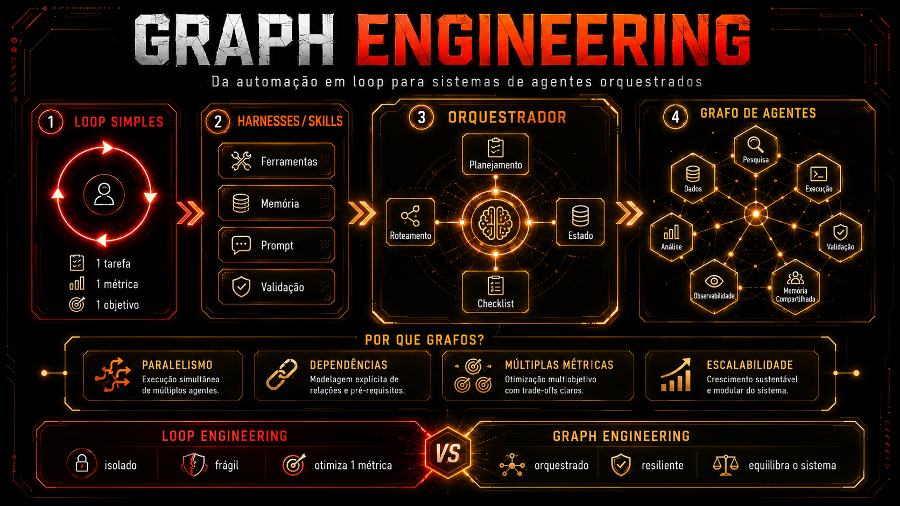

🧭 Understand “agentic”: an agent with tools and judgment
"Agentic" describes a way to use a model, not an architecture. You describe the goal, provide a set of tools (search, terminal, file editor), and let the model decide, step by step, what to do next. There is no predefined path diagram—the path is discovered in real time, within the conversation itself.
🆕 New here? Two words before you continue
- Model’s judgment: the decision about "what to do now" happens inside the model’s head, token by token—there’s no line of code that says "after this, do that."
- Output test: an explicit, verifiable condition that says when the work is done (e.g., “the tests passed”). Purely agentic systems rarely have one; they stop when the model “thinks” it’s done.
This isn't a defect; it's the defining feature. It's exactly right for open-ended, exploratory tasks — “investigate this strange bug,” “read this repository and tell me what it does” — one-off tasks where you don't know in advance which steps you'll need. Trying to draw the flowchart first would be a waste of time: you don't know the flow yet.
✓ Agentic works well when
- ✓The task is exploratory — you don’t know the steps in advance
- ✓Runs once or a few times, under human supervision
- ✓The cost of a wrong step is low and reversible
✗ Agentic is costly when
- ✗The task repeats every day — you explain the same objective again and again
- ✗Needs a guarantee that “this will always happen in this order”
- ✗No one can predict token costs because the path changes every round
Key concepts
Lives in the model's head
You provide it; the model chooses whether to use it
Path discovered on the fly
Run it once, for exploration
🔁 Understand “loop”: the cycle drawn with an exit test
In a loop, you stop writing prompts and start designing cycles. Instead of trusting the model to remember to check its own work, you write that in code: discover → plan → act → verify → stop. The structure leaves the model's head and becomes something you can read, version, and test.
💡 The stopping condition is what changes everything
A loop only becomes a real loop when there is a output test explicit — something you can run that returns yes/no: "the tests passed," "the schema validated," "the reviewer's score is greater than 8." Without this test, you just have an agentic with one more turn.
- •The model still decides what to do within each stage, but no longer decides the order of the steps
- •You gain reproducibility: the same process runs the same way on Monday and Friday
- •You pay in engineering: someone has to write and maintain this cycle
Works for repeatable tasks with verifiable success criteria: generate a report every morning, fix a bug until the tests pass, write a piece until it passes a quality checklist. If you run the same thing more than once and can tell when it worked, the loop is the right structure.
Key concepts
Discover/plan/act/verify/stop
Verifiable condition, not "a hunch"
Out of your head, into an artifact
Runs every time, with clear criteria
🕸️ Understand “graph”: compound loops with explicit edges
A graph (in this sense of agent architecture) is several loops connected by written-out edges before to run. Each node in the graph is itself a loop — with its own model, its own tools, its own permissions, and its own instructions. The path between the nodes are what the graph adds.
What to look at: the dashed box is new, but its contents aren’t— each node still has its own little loop (the word "loop" written inside it). The graph doesn’t replace the loop; it composes loops. And what the next topic will build with a real case.
Key concepts
Each node has its own cycle
The path exists before it runs
Model, tools, and permissions specific to each node
Graph composes the loop; it doesn't replace it
📰 Build the same case in all three formats
The case is a daily research summary: every morning, the system reads a few sources on a topic, writes a one-page summary, and checks that it’s accurate before sending it. We’ll build this same system three times—and compare what happens in each version.
As a single overloaded loop
One agent does everything in a single window: searches for sources, writes, reviews.
It opens the sources one by one — because a loop is sequential by design — and dumps the raw HTML for each one into the same context (the window of text the model is "seeing" at that moment). By the time it reviews, that context has become a swamp: raw HTML, half-written prose, and earlier reasoning all floating together. And worst of all, it reviews in the same context where it wrote—so it tends to rubber-stamp its own work.
As a small graph
Three nodes, state flowing between them, each with its own context.
Researcher opens in N sources in parallel — that’s fan-out: breaking a task into several branches at once. It delivers only the notes (not the raw HTML) to the writer, which receives a clean context — without the search clutter, only what's needed to write. The writer hands the draft to reviewer, which also has new context: it sees only the text and the quality criterion, with a “rejected” edge back to the writer if it doesn’t pass.
What to look at: three things cross the edges— notes, draft e criticism — and none of them is the raw HTML from the sources. That’s what separates the graph version from the single-loop version: each node receives only what it needs, never the entire transcript from the previous node. (Transcript = the complete history of a conversation/run, including all intermediate reasoning—useful for debugging, too heavy to pass along as input.)
| Dimension | agentic | loop | graph |
|---|---|---|---|
| Who decides the next step | the model, with each token | the model, within a fixed cycle | the model, inside each node; routing between nodes is fixed |
| Where the structure lies | in the model's head | in code, a cycle | in code, a diagram of nodes and edges |
| Parallelism | none native | none—the loop is sequential by design | first-class fan-out/fan-in |
| Context | a single window, growing without limit | a window around the cycle | one clean context per node |
| How you debug | reading the entire transcript | reading the transcript of each iteration | reading the diagram + the state on each edge |
| Maintenance cost | low (prompt only) | medium (cycle + stopping condition) | high (N prompts + state schema + routing) |
| When to use | open task, runs once | repeatable task, one agent is enough | repeatable task that needs real specialization/parallelism |
Key concepts
Daily brief in all three formats
Split one task into N branches
Each node sees only what it needs
A failure sends you back to the writer
✨ Learn what the graph genuinely makes possible
These are three concrete things, not a vibe of “more advanced.” First: in parallel specialized nodes with clean, separate contexts — the researcher doesn’t carry the reviewer’s vocabulary, and the reviewer doesn’t carry the search noise. Second: fan-out and fan-in as a first-class movement — split a task into N branches, run them at the same time, and combine the result. Third: explicit and auditable control flow — the path is a diagram you can read, not something you reconstruct by reading a 40-thousand-token transcript.
What to look at: the two sides solve "doing more" in opposite ways. The loop grows to low — more iterations in the same node. The graph grows to outside — more nodes running at the same time. You can’t do a true fan-out inside a single loop; it only knows how to repeat, not split.

Key concepts
Clean, separate context
Join the N branches back together
A diagram you can read, not reconstruct
Graph grows outward; loop grows downward
💸 Know what the graph costs
None of this is free. You now have to maintain three prompts instead of one — each node has its own instructions, and the three need to evolve together without breaking the edges between them. You need to define a state schema: the exact format of what the researcher delivers to the writer, and what the writer delivers to the reviewer. Without this written contract, the nodes start disagreeing about what “notes” or “draft” mean.
⚠️ Failure modes that only exist in the graph
- A merge that silently swallows a source — the fan-in joins 5 branches, one failed, and no one noticed that a source was missing from the final summary.
- Routing that keeps going back and forth forever — the “rejected” edge sends it back to the writer, who writes again and is rejected again, with no limit on attempts.
- State leaking from one node to another — the context that should be clean carries junk from the previous node because the state schema wasn’t followed.
✓ Overhead improves quality when
- ✓The task runs every day — the fixed cost of building the graph pays off over repeated runs
- ✓There is real parallelism to explore (N sources, N branches)
- ✓Specializing each node really does improve the result (reviewer with independent criteria)
✗ Overhead is pure tax when
- ✗The task runs once — you never recoup the cost of setting up three prompts
- ✗There's nothing to parallelize—it's a genuinely sequential process
- ✗A single node with all the tools and all the instructions — that’s a loop reinvented; the graph structure isn’t doing anything
🧪 Practical example: degenerate graph vs. real graph
Objective: compare the same thing grafo.json of the daily brief in two formats—the “single-node graph” (graph name, loop body) and the three-node version (a real graph)—and see the difference in the file itself.
// grafo.json — VERSAO DEGENERADA (1 no, todas as ferramentas, todas as instrucoes)
{
"nodes": [
{ "id": "faz-tudo", "model": "<seu-modelo>",
"tools": ["buscar", "escrever", "revisar"],
"prompt": "Busque as fontes, escreva o resumo e revise ate ficar bom." }
],
"edges": []
}
// isto NAO e um grafo funcional — e um loop com nome de grafo.
// zero arestas = zero coisa que a estrutura de grafo esta fazendo.
// grafo.json — VERSAO DE TRES NOS (grafo de verdade)
{
"nodes": [
{ "id": "pesquisador", "model": "<modelo-rapido>", "tools": ["buscar"],
"prompt": "Para cada fonte em paralelo, extraia so os fatos relevantes ao tema." },
{ "id": "escritor", "model": "<modelo-de-escrita>", "tools": [],
"prompt": "Com base APENAS nas notas recebidas, escreva um resumo de 1 pagina." },
{ "id": "revisor", "model": "<modelo-critico>", "tools": [],
"prompt": "Compare o rascunho com as notas originais. Aprove ou reprove com criticas especificas." }
],
"edges": [
{ "from": "pesquisador", "to": "escritor", "carrega": "notas" },
{ "from": "escritor", "to": "revisor", "carrega": "rascunho" },
{ "from": "revisor", "to": "escritor", "quando": "reprovado", "carrega": "criticas", "limite_voltas": 2 }
]
}
How to verify: count the edges.
If the "graph" version of your project has zero edges or a single node with all the tools, it's the degenerate version—
a disguised loop. If it has edges with carrega defined (what passes from one node to another),
it’s a real graph.
Bias test: ask Claude Code to judge one of your tasks
and say whether it calls for agentic, loop, or graph — requiring it to justify why the other two don't work.
If it answers "graph" for a task that runs <uma vez so>, that’s hype bias.
Ask about the maintenance cost: how many prompts, what state schema, and what new failure mode it introduces.
Quick check (nothing is blocked): You have a graph with ONE node that has all the tools and all the process instructions. What is it, really?
Key concepts
The contract between us
One per node, evolving together
Merge, routing loop, leak
1 node with everything = disguised loop
📌 Module Summary
Next Module:
3.3 — Myth vs. fact: separating what graph engineering promises from what it actually delivers.